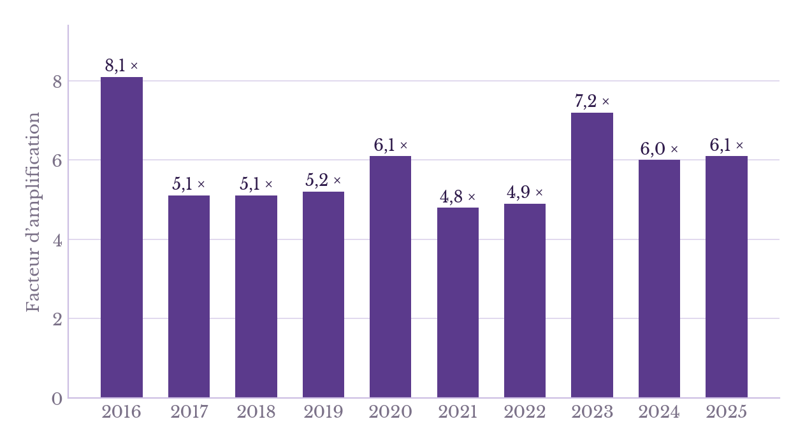
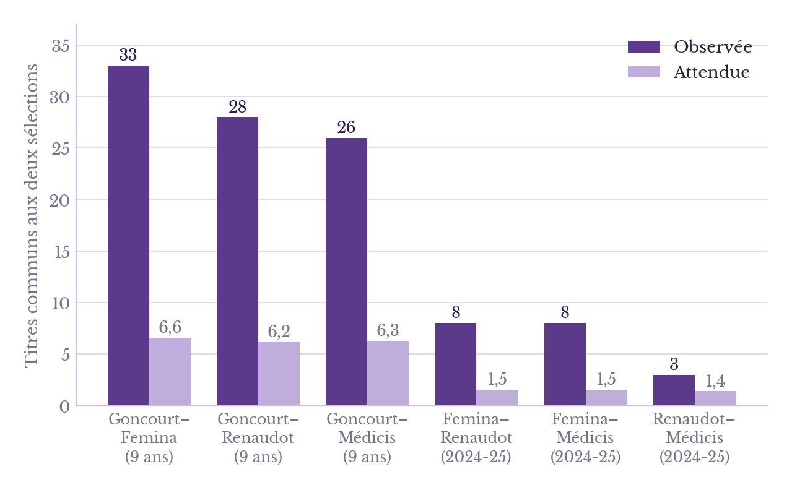
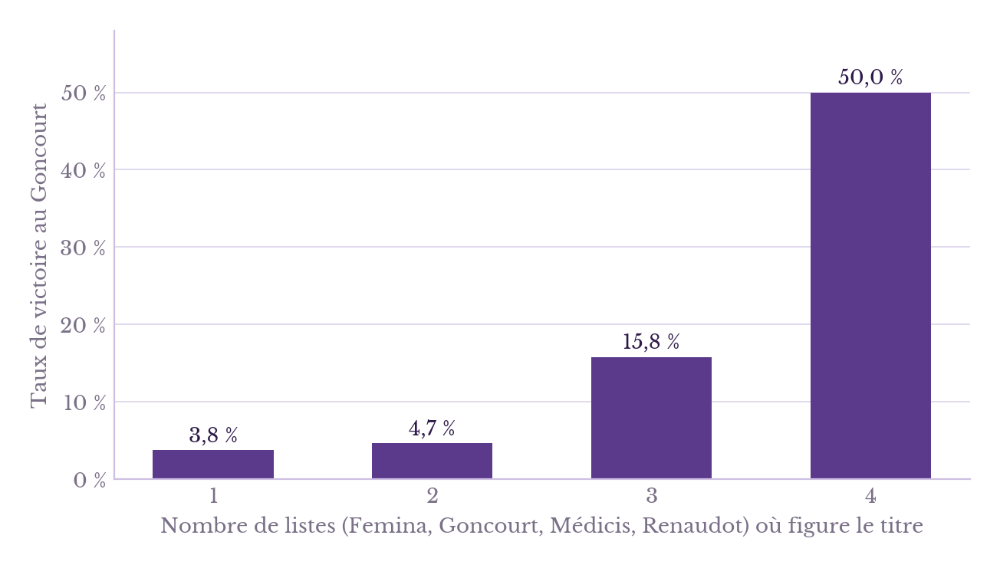
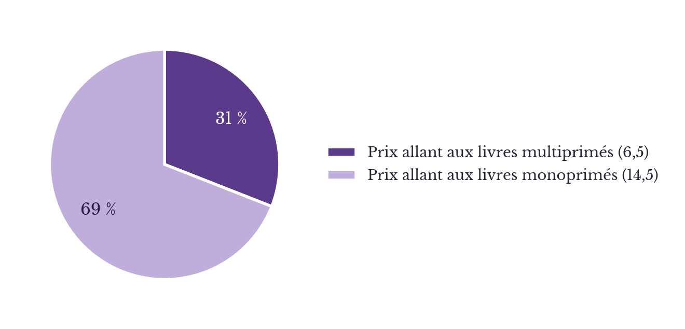

Thélyson Orélien, un scandale littéraire ? Une analyse statistique
Analyse statistique des prix littéraires et réflexion sur l'IA et l'écriture
Qui est donc Thélyson Orélien ?
Né en 1988 en Haïti, Thélyson Orélien quitte son pays et rejoint les États-Unis, puis le Canada. Il s’inspire de ce voyage pour écrire C’était ça ou mourir, « un roman dénué de tout voyeurisme » et au « verbe alerte »1, selon le site Vogue France. Le livre remporte le prix de la Première Plume 2026 et le prix du Roman Fnac 2026. C’est un véritable phénomène : l’ouvrage s’est vendu à plus de 82 000 exemplaires2, dont 65 0003 en France depuis le 19 août 2026. L’auteur est en lice pour les prix Goncourt, Renaudot, Femina4 et le prix des Rendez-vous du premier roman5.
Alors pourquoi parle-t-on tant de Thélyson Orélien ?
Eh bien, le 21 septembre 2026, un compte X (anciennement Twitter) « Balance ton Claude » détenu par un collectif de 5 personnes sous la direction de Samuel Fitoussi affirme que le livre C’était ça ou mourir aurait été très largement généré par une IA sur la base d’un outil de détection Pangram. La chose fait scandale, d’autant que surgissent des accusations de plagiat : la nouvelle de 2012 Où va le monde reprendrait une grande partie de la préface du Matin des magiciens de Louis Pauwels et Jacques Bergier paru en 1960 ; « Ne mettons pas nos héros sur un piédestal » de 2013 serait une traduction légèrement remaniée d’une chronique d’Andy Bautista parue cinq jours plus tôt dans The Philippine Star ; « Le prochain pape devrait être plus jeune », également de 2013, serait une copie à quelques mots près d’un éditorial de The Hindu ; etc. Finalement, Philippe Claudel, président de l’Académie Goncourt, décide de retirer de sa sélection l’ouvrage le 25 septembre.
Un concurrent de Pangram, Lucide, a également analysé l’ouvrage avec son détecteur (Lucide 3.0), soit 59 488 mots. Selon ses résultats, les 34 chapitres auraient été générés par IA à près de 100 %, et l’épilogue à 96,7 %.
Y a-t-il vraiment utilisation de l’IA ?
C’est la grande question : quelle valeur attribuer à un outil de détection de l’intelligence artificielle qui fonctionne lui-même grâce à l’intelligence artificielle ? Une autre question, tout aussi importante, mais que nous ne traiterons pas ici, est celle de la valeur d’une accusation anonyme lancée depuis un compte X. L’outil utilisé est Pangram 4, développé par Pangram Labs et lancé en juillet 2026. Le recul sur ce modèle est relativement faible : l’unique étude sérieuse6 à son sujet a été produite par le laboratoire lui-même et doit donc être considérée avec précaution. La fiche technique affirme que Pangram 4 obtient un AUROC de 0,9916 sur 1, c’est-à-dire un score proche de 100 % pour détecter les textes rédigés par une IA. Pour les textes coécrits par une IA et un humain, le taux de faux positifs — la probabilité qu’un texte humain soit considéré comme écrit par une IA — atteint 0,01 %, ce qui reste faible. Il est important de souligner que la langue a peu d’impact sur les capacités du détecteur.
Le deuxième outil, Lucide 3.0, est lui aussi récent : il est sorti à la mi-septembre. Il a toutefois l’avantage, par rapport à Pangram 4, d’être spécialisé dans le français. Une fiche technique publiée par l’entreprise fait également état d’un faible taux de faux positifs (0,3 %) pour les textes entièrement générés par IA. Sa capacité à détecter les textes mixtes est moins systématique, puisque son taux de réussite atteint 84 %7. Ces deux études vont dans le sens de l’hypothèse d’un texte rédigé par IA, même si elles doivent être considérées avec recul, car elles poursuivent un objectif commercial et marketing. N’oublions pas, toutefois, un principe fondamental : la présomption d’innocence. Dans l’attente d’une éventuelle décision de justice, rien ne permet d’affirmer que Thélyson Orélien a écrit son livre avec l’IA.
Ce que ce scandale révèle
En réalité, la gravité du scandale ne réside pas tant dans le fait que Thélyson Orélien ait utilisé ou non l’IA que dans la crédibilité des institutions littéraires qui font autorité, comme l’Académie Goncourt. Comment se fait-il que les académiciens chargés d’attribuer le prix littéraire français le plus prestigieux aient sélectionné l’ouvrage de Thélyson Orélien ? Un internaute signalait déjà le 12 septembre, soit une semaine avant les premières accusations : « Dommage que le livre entier soit écrit avec… l’intelligence artificielle », en citant ces mots du roman : « Il y a un gars qui peut me faire passer. Ce n’est pas un visa. C’est un passage. Une ouverture ». Deux hypothèses se présentent : soit l’ouvrage de Thélyson Orélien est effectivement digne de remporter le prix Goncourt, ce qui interroge nos conceptions de l’art, de la beauté et de l’émotion : que deviennent-elles lorsque ces qualités, résolument humaines, résultent d’une technique ? Soit il existe un entre-soi dans le milieu littéraire et une présélection informelle dans la première liste.
Et si C’était ça ou mourir était bon ?
Le postulat informel que formule Thomas Durand sous couvert d’une critique des processus de sélection de l’académie Goncourt dans un billet publié sur la Menace théoriste8 mais non moins intéressant, c’est que l’IA écrit mal : « Mais si le texte est une succession de formules calamiteuses, répétitive, ternaires, téléphonées et pataudes, de comparaisons pseudo-profondes et de pirouettes approximatives, le soupçon pèsera sur les conditions dans lesquelles s’exerce la grand-messe des récompenses mondaines. Que vaut encore le jugement littéraire de ce petit monde ? ». La question ne se poserait pas, ou pas de la même façon en tout cas, s’il était de notoriété publique que les IA écrivent mieux que les écrivains : « Quand je lis du Racine, du Flaubert ou du Victor Hugo, je saisis la distance qui me sépare de leur talent, le doute s’éteint de lui-même. »
Prenons le contrepied de ce postulat et imaginons, comme une pure expérience de pensée, que l’IA écrive mieux que nous. Comment ce texte serait-il jugé ? Le blog « Les Lectures de Cannetille9 » souligne le mélange des langues, les phrases courtes et l’humour noir et cynique qui s’y dissimule. D’autres critiques saluent sa musicalité, ses images et ses métaphores10. Indépendamment des préjugés que l’on peut avoir sur le style de l’intelligence artificielle, que penser de cette phrase du roman ? « Je me suis demandé : qu’est-ce qui fait qu’on reste dans un pays qui veut nous tuer à chaque virage ? Ce n’est pas l’amour. Ce n’est pas l’attachement. C’est juste qu’on ne sait pas où on pourrait aller. Jusqu’à ce que la mort monte dans notre bus et nous donne une claque. Une claque qui réveille, ou qui enterre. » Malgré mes réflexes rouillés de khâgneux, je me suis prêté à l’exercice de l’analyse :
Ce monologue intérieur à la première personne s’ouvre sur un verbe pronominal au passé composé, « Je me suis demandé », qui introduit après les deux points une interrogation directe sans guillemets, bâtie sur la locution « qu’est-ce qui fait que » et sa complétive. Le pronom indéfini « on » généralise l’expérience, tandis que la proposition subordonnée relative « qui veut nous tuer » (antécédent « pays ») prête au pays une volonté hostile, le pronom personnel « nous » marquant la passivité du collectif. Le complément circonstanciel de fréquence « à chaque virage » ouvre une métaphore à double sens, littéral et figuré, que prolonge plus loin l’image du bus. Deux phrases brèves en anaphore, « Ce n’est pas l’amour. Ce n’est pas l’attachement. », nient en gradation descendante les causes attendues, etc.
Il y a derrière cette phrase une réelle beauté, une profondeur indéniable. C’est bien écrit. Sans cela, le livre n’aurait certainement pas suscité un tel engouement, même si l’on peut toujours soupçonner un effet de groupe alimenté par la preuve sociale11. Mais au fond, qu’ai-je démontré par cette analyse ? Que le texte est bien construit, que ses images fonctionnent, que ses répétitions produisent un effet et que sa simplicité apparente dissimule un véritable travail d’écriture. Autant de qualités que l’on serait en droit d’attendre d’un bon écrivain. Or, si j’apprenais que ces quelques lignes ont été écrites par une intelligence artificielle, lesquelles de ces qualités disparaîtraient ? La métaphore du pays qui tue à chaque virage cesserait-elle d’être pertinente ? L’image de la mort qui monte dans un bus perdrait-elle sa force ? Les phrases courtes deviendraient-elles soudain le symptôme d’une pauvreté stylistique plutôt que le moyen d’une progression dramatique efficace ?
En réalité, cette hypothèse s’appuie sur une étude de Proksch et al., publiée en 2024 et intitulée « Frontiers in Artificial Intelligence ». Celle-ci conclut notamment que le fait de croire qu’un texte a été écrit par un humain conduit à surestimer fortement l’intelligence et les compétences de son auteur. Ce résultat peut-il s’appliquer à la littérature ? On peut raisonnablement le penser au vu du scandale soulevé par l’affaire Thélyson Orélien. Ainsi, deux textes de qualité équivalente ne seraient pas perçus de la même manière selon que l’on soupçonne ou non l’intervention de l’intelligence artificielle.
Y'a t'il une mafia des prix littéraires
Le deuxième postulat, beaucoup plus explicite, avancé par Thomas Durand dans son article, concerne la collusion qui peut exister entre les maisons d’édition et l’opacité des processus de sélection. En 2020, une enquête de Raphaëlle Leyris publiée dans Le Monde, intitulée « Du Goncourt au Renaudot, enquête sur le fonctionnement des jurys littéraires », montre que le statut « à vie » des jurés de l’Académie Goncourt favorise un système de club où le copinage et la fidélité aux réseaux pèsent dans les négociations. L’analyse des données fait également apparaître un certain entre-soi littéraire : soit les livres correspondent parfaitement aux normes implicites qui permettent la récompense, manifestement partagées dans le milieu des prix, soit le jeu des relations et des stratégies favorise l’élection d’un titre particulier.
Une analyse quantitative des prix littéraires
Nous avons recensé, de 2016 à 2025, la répartition des 21 prix littéraires les plus prestigieux de la francophonie (Goncourt, Renaudot, Femina, Médicis, Interallié, Académie française, Goncourt des lycéens, Renaudot des lycéens, Décembre, Livre Inter, Grand prix RTL-Lire, prix du Monde, prix du roman Fnac, prix des libraires, Landerneau des lecteurs, Jean Giono, Orange du Livre, France Culture-Télérama, Deux Magots, Première Plume et Femina des lycéens). Nous avons également analysé les livres présents dans les sélections du Goncourt, du Femina, du Renaudot et du Médicis afin d’en étudier les recoupements.
Nous partons de plusieurs hypothèses principales que nous invaliderons par une démonstration par l’absurde :
- Hypothèse 1 : À caractéristiques littéraires comparables, le fait d'être publié par une maison d'édition particulière ne devrait pas augmenter significativement les chances d'être sélectionné pour un prix.
- Hypothèse 2 : Si les prix distinguaient systématiquement des ouvrages différents selon leurs critères propres, on devrait observer une certaine dispersion des récompenses.
- Hypothèse 3 : les ouvrages des sélections de concours sont considérés de qualité équivalente.
De ces hypothèses découlent les suivantes :
- Hypothèse 3bis : La présence d'un ouvrage dans plusieurs sélections ne devrait pas, en elle-même, accroître ses chances de remporter un prix ultérieur.
- Hypothèse 1bis et 2bis : Les listes établies par les différents jurys devraient se recouper dans des proportions compatibles avec un modèle où les sélections sont indépendantes, compte tenu du nombre de titres retenus et de l'ensemble des romans admissibles.
Des éditeurs particulièrement avantagés ?
En 2018, sur les 16 ouvrages de la première sélection, 3 sont publiés par Gallimard, soit 18,75 %. Ces trois titres appartiennent à la « Collection blanche », qui publie cette année-là 14 ouvrages susceptibles de concourir. À titre de comparaison, environ 381 romans sont publiés en France pour cette rentrée littéraire. Être publié par Gallimard multiplie donc par 5,1 les chances de figurer dans la sélection, soit une hausse de 410 % par rapport à la moyenne du marché.

La permanence dans le temps invalide les tentatives de l’Académie Goncourt pour être plus transparente dans la sélection des livres (lorsqu’elle supprime le statut à vie des jurés ou que le vote se fait désormais à la vue de tous) : encore aujourd’hui, la « collection blanche » est un pré-signal qui influence fortement le succès futur du livre, indépendamment de sa qualité12.
Une proximité possible entre les jurys ?
Le principe consiste à prendre les romans retenus par deux prix littéraires, à compter les titres communs aux deux sélections, puis à comparer ce résultat à celui que l’on obtiendrait si les listes étaient constituées indépendamment à partir d’un ensemble de romans possibles. Le constat est le suivant : les sélections ne se comportent pas comme des choix indépendants dans le modèle aléatoire retenu, et les jurys semblent avoir davantage de romans en commun que prévu si l’on suppose que tous les romans sélectionnés sont de qualité équivalente.

Cet écart entre la proximité observée et attendue peut s’expliquer de plusieurs façons : d’abord, la forte présence médiatique dont peut déjà disposer un éditeur ; le nom de l’auteur, qui est plus ou moins connu et de fait, sa diffusion auprès des libraires, des critiques et des jurés ; et enfin, les influences réciproques qui peuvent s’exercer entre les jurés. Le modèle ne permet pas d’estimer l’importance de chacun des critères dans le résultat obtenu : il faudrait pour cela tenter de tenir compte de la visibilité d’un ouvrage précédant chaque remise de prix. Alors que pouvons-nous conclure de cela ? Simplement que les sélections des grands prix littéraires se recoupent bien davantage que ce que ne le prévoit les modèles de hasard.
Par ailleurs, la présence simultanée d’un titre dans les sélections Femina, Goncourt, Médicis et Renaudot semble augmenter fortement sa probabilité de remporter le prix Goncourt. Ce résultat va dans le sens de ceux obtenus par Watts dans son expérience de 2006 sur les biais cognitifs au sein des marchés culturels.

Le graphique suivant présente la répartition moyenne des 21 prix mentionnés plus tôt : dans 31 % des cas, un prix récompense un ouvrage déjà primé. Plus généralement, notre analyse montre que, sur dix ans, aucun livre n’a remporté deux des grands prix d’automne (Goncourt, Renaudot, Femina, Médicis, Interallié et Grand Prix du roman de l’Académie française), à deux exceptions près : Le Rêve du jaguar de Miguel Bonnefoy (Femina et Académie française en 2024) et Le Lambeau de Philippe Lançon (Femina en 2018, ainsi qu’un « prix spécial » Renaudot créé pour l’occasion). Les doubles ou triples couronnes associent presque toujours un grand prix à un prix « de lecteurs » (Goncourt des lycéens, Landerneau, prix du Monde, Fnac ou libraires). Les trois livres les plus décorés sont La Maison vide (2025), Triste tigre (2023) et S’adapter (2021), chacun ayant remporté trois prix.

Ce que révèlent les prix littéraires
En définitive, cette analyse quantitative tend à confirmer que les prix littéraires ne reposent pas uniquement sur une évaluation indépendante de la qualité des œuvres, mais s’inscrivent dans un système où la réputation des éditeurs, la visibilité médiatique des auteurs, les réseaux professionnels et les dynamiques d’influence entre jurys jouent un rôle déterminant. La surreprésentation de certaines maisons d’édition, la proximité statistiquement significative entre les sélections et l’augmentation des chances de remporter le Goncourt lorsqu’un ouvrage figure simultanément dans plusieurs listes suggèrent l’existence de mécanismes cumulatifs de consécration. Ces résultats ne suffisent toutefois pas à démontrer l’existence d’une collusion délibérée entre éditeurs et jurés, ni à mesurer précisément le poids respectif de chaque facteur. Ils mettent néanmoins en évidence les limites d’un système dont les critères de sélection demeurent en partie opaques et dans lequel les chances de reconnaissance semblent inégalement réparties. Ainsi, au-delà de la question de la transparence des jurys, c’est celle de l’indépendance du jugement littéraire qui se trouve posée : dans quelle mesure les prix récompensent-ils les qualités propres d’une œuvre, et dans quelle mesure consacrent-ils également la position qu’elle occupe déjà au sein du champ littéraire ?
Thélyson Orélien et les prix littéraires
Revenons au premier postulat informel de Thomas Durand, selon lequel un ouvrage écrit par une intelligence artificielle ne pourrait prétendre à un prix parce qu’il serait fondamentalement mauvais. Les chiffres qui précèdent pourraient alors expliquer la sélection de C’était ça ou mourir au Goncourt : celle-ci témoignerait moins d’une reconnaissance intrinsèque de ses qualités littéraires que de l’influence des mécanismes de visibilité, de légitimation et de consécration qui structurent le champ éditorial. Notons que cela ne signifie pas que le livre de Thélyson Orélien soit mauvais : c'est justement tout l'enjeu des premiers paragraphes de l'articles.
Conclusion générale
L’affaire Thélyson Orélien soulève une question qui dépasse largement celle de l’usage de l’intelligence artificielle en littérature : et si celle-ci était capable d’écrire aussi bien, voire mieux que nous ? Si la valeur esthétique d’un texte dépend moins de sa qualité que de l’idée que nous nous faisons de son auteur, quelle est la crédibilité des institutions littéraires ? La sélection d’un ouvrage potentiellement rédigé avec l'IA semble révéler une incapacité à distinguer un texte généré d’un roman auquel l’auteur aurait consacré plusieurs années. La consécration d’une œuvre ne dépend pas uniquement de ses qualités intrinsèques, mais aussi de sa visibilité, de son éditeur et des réseaux qui favorisent sa reconnaissance. Sans démontrer l’existence d’une collusion délibérée ni trancher la question de l’origine du texte, cette affaire met en lumière deux éléments : la minimisation volontaire de la qualité d’une œuvre générée par IA (un sujet qui fera sans doute l’objet d’un autre article) et le fait que les institutions littéraires ne récompensent pas nécessairement la qualité d’une œuvre.
Annexe 1 : données
| Année | G | F | M | R |
|---|---|---|---|---|
| 2016 | 16* | 16* | 15* | 15* |
| 2018 | 16* | 14 | 15* | 15* |
| 2019 | 15 | 16* | 15* | 15* |
| 2020 | 16* | 16* | 15* | 15* |
| 2021 | 16* | 17 | 15* | 15* |
| 2022 | 16* | 16 | 15 | 15* |
| 2023 | 16 | 16 | 15 | 15* |
| 2024 | 16 | 16* | 16 | 15* |
| 2025 | 15 | 16 | 14 | 15 |
| Total | 142 | 143 | 135 | 135 |
| Parution | Livre (auteur) | Prix remportés |
|---|---|---|
| 2016 | « Laëtitia ou la Fin des hommes » (Ivan Jablonka) | Médicis, prix du Monde (Médicis, prix du Monde) |
| 2016 | « Petit Pays » (Gaël Faye) | Goncourt des lycéens, Fnac, France Culture-Télérama (Fnac) |
| 2016 | « En attendant Bojangles » (Olivier Bourdeaut) | RTL-Lire, France Culture-Télérama (mars 2016) (RTL-Lire, France Culture-Télérama) |
| 2016 | « Comment Baptiste est mort » (Alain Blottière) | Décembre, Jean-Giono (Décembre, Prix littéraires 2016) |
| 2017 | « L'Art de perdre » (Alice Zeniter) | Goncourt des lycéens, prix du Monde, Landerneau (Prix littéraires 2017) |
| 2017 | « La Nostalgie de l'honneur » (Jean-René Van der Plaetsen) | Interallié, Jean-Giono (Interallié, Prix littéraires 2017) |
| 2018 | « La Vraie Vie » (Adeline Dieudonné) | Fnac, Première Plume, Renaudot des lycéens (Renaudot des lycéens) |
| 2018 | « Le Lambeau » (Philippe Lançon) | Femina, « prix spécial » Renaudot (Renaudot) |
| 2019 | « Par les routes » (Sylvain Prudhomme) | Femina, Landerneau (Prix littéraires 2019) |
| 2019 | « Les Choses humaines » (Karine Tuil) | Interallié, Goncourt des lycéens (Interallié) |
| 2019 | « Le Bal des folles » (Victoria Mas) | Première Plume, Renaudot des lycéens (Renaudot des lycéens) |
| 2020 | « Chavirer » (Lola Lafon) | Landerneau, France Culture-Télérama (Prix littéraires 2020) |
| 2021 | « S'adapter » (Clara Dupont-Monod) | Femina, Goncourt des lycéens, Landerneau (Femina, Prix littéraires 2021) |
| 2021 | « Ne t'arrête pas de courir » (Mathieu Palain) | Interallié, France Culture-Télérama (Interallié) |
| 2022 | « La Treizième Heure » (Emmanuelle Bayamack-Tam) | Médicis, Landerneau (Médicis, Prix littéraires 2022) |
| 2022 | « Attaquer la terre et le soleil » (Mathieu Belezi) | Prix du Monde 2022, Livre Inter 2023 (Livre Inter) |
| 2022 | « On était des loups » (Sandrine Collette) | Renaudot des lycéens, Jean-Giono (Renaudot des lycéens, Prix littéraires 2022) |
| 2023 | « Veiller sur elle » (Jean-Baptiste Andrea) | Goncourt, Fnac (Fnac) |
| 2023 | « Triste tigre » (Neige Sinno) | Femina, Goncourt des lycéens, prix du Monde (prix du Monde) |
| 2023 | « Que notre joie demeure » (Kev Lambert) | Médicis, Décembre (Décembre) |
| 2023 | « Humus » (Gaspard Koenig) | Interallié, Jean-Giono (Interallié, Prix littéraires 2023) |
| 2023 | « Ce que je sais de toi » (Éric Chacour) | Première Plume 2023, Femina des lycéens 2023, prix des libraires 2024 (libraires) |
| 2024 | « Houris » (Kamel Daoud) | Goncourt, Landerneau (Goncourt 2024, Prix littéraires 2024) |
| 2024 | « Le Rêve du jaguar » (Miguel Bonnefoy) | Femina, Académie française (Femina, Académie française) |
| 2024 | « Les Guerriers de l'hiver » (Olivier Norek) | Renaudot des lycéens, Jean-Giono (Renaudot des lycéens, Le Figaro) |
| 2024 | « Ilaria ou la conquête de la désobéissance » (Gabriella Zalapì) | Femina des lycéens, France Culture-Télérama (Loumina) |
| 2025 | « La Maison vide » (Laurent Mauvignier) | Goncourt, prix du Monde, Landerneau (Goncourt 2025, prix du Monde) |
| 2025 | « La Nuit au cœur » (Nathacha Appanah) | Femina, Goncourt des lycéens, Renaudot des lycéens (Femina, Renaudot des lycéens) |
| 2025 | « Le monde est fatigué » (Joseph Incardona) | Deux Magots, Femina des lycéens (Prix littéraires 2025) |
| Année | Livres multiprimés | Prix allant aux livres multiprimés | Prix allant aux livres monoprimés (1 livre = 1 prix) | Prix non attribués / Hors périmètre | TOTAL DES PRIX |
|---|---|---|---|---|---|
| 2016 | 4 | 8 | 13 | 0 | 21 |
| 2017 | 2 | 5 | 16 | 0 | 21 |
| 2018 | 2 | 5 | 16 | 0 | 21 |
| 2019 | 3 | 6 | 15 | 0 | 21 |
| 2020 | 1 | 2 | 19 | 0 | 21 |
| 2021 | 2 | 5 | 16 | 0 | 21 |
| 2022 | 3 | 6 | 15 | 0 | 21 |
| 2023 | 5 | 12 | 9 | 0 | 21 |
| 2024 | 4 | 8 | 13 | 0 | 21 |
| 2025 | 3 | 8 | 13 | 0 | 21 |
| MOYENNE | 2,9 | 6,5 (31 %) | 14,5 (69 %) | 0 | 21 (100 %) |
| Année | Sur trois ou quatre listes | Sur deux listes |
|---|---|---|
| 2016 | Appanah « Tropique de la violence » (G, F, M) ; Del Amo « Règne animal » (G, F, M) ; Faye « Petit Pays » (G, F, M) ; Mauvignier « Continuer » (G, F, M) ; Cusset « L'Autre qu'on adorait » (G, F, R) ; Slimani « Chanson douce » (G, F, R) ; Jablonka « Laëtitia » (G, R en essai, M) | Lang (G, F) ; Gros, Jauffret, Reza (G, R) |
| 2017 | Désérable « Un certain M. Pickielny » (7 prix sur 7 : Goncourt, Goncourt des lycéens, Renaudot, Médicis, Femina, Interallié, Académie) ; Adimi « Nos richesses », Guez « La Disparition de Josef Mengele », Haenel « Tiens ferme ta couronne », Jaenada « La Serpe », Zeniter « L'Art de perdre » (5 listes chacun) (Le Figaro) | Giraud « Un loup pour l'homme » (4 listes) |
| 2018 | Diop « Frère d'âme » (G, F, R) | Dieudonné « La Vraie Vie » (G, R) |
| 2019 | Appanah « Le Ciel par-dessus le toit » (G, F, R) | Amigorena « Le Ghetto intérieur » (G, M) ; Barbéris, Pauly, Tuil (G, F) ; Coatalem (G, R) |
| 2020 | Le Tellier « L'Anomalie » (G, R, M) ; Chiche « Saturne » (G, F, M) | Lafon « Chavirer » (G, F) ; Aïssaoui, Frain (G, R) ; Martin, de Toledo (G, M) |
| 2021 | Sarr « La Plus Secrète Mémoire des hommes » (G, F, R, M) ; Angot « Le Voyage dans l'Est » (G, F, M) ; Berest « La Carte postale » (G, F, R) | Dupont-Monod, Fottorino, Noudelmann, Quentin (G, F) |
| 2022 | Ravey « Taormine » (G, F, R) ; Sabolo « La Vie clandestine » (G, R, M) | Bouillier (G, F) ; Devers (G, R) ; Korman, Serre (G, M) |
| 2023 | Barbéris « Une façon d'aimer » (G, F, M) ; Sinno « Triste tigre » (G, F, M) | Andrea (G, F) ; Amoudi, Koenig, Sénanque (G, R) ; Lambert, Reinhardt (G, M) |
| 2024 | Faye « Jacaranda » (G, F, R) ; Kern « La Vie meilleure » (G, F, R) ; Bonnefoy « Le Rêve du jaguar » (F, R, M) | Daoud, Jaenada, Montaigu, Norek, Orengo (G, R) ; Gaudy (G, F) ; Clerc, E. Lambert, Taïa (G, M) ; Bouillier « Le Syndrome de l'Orangerie », Choplin « La Barque de Masao », Laforcade « Berlin pour elles » (F, R) ; Deck « Ann d'Angleterre », Haddad « Aimez Gil », Richard « La Vie infinie » (F, M) |
| 2025 | Appanah « La Nuit au cœur » (G, F, M, R) ; Mauvignier « La Maison vide » (G, F, M) | Carrère « Kolkhoze », Dunant « Un amour infini » (G, M) ; Pourchet « Tressaillir », Thomas « Un frère » (G, F) ; Alikavazovic « Au grand jamais » (F, R) ; Richeux « Officier radio », Serre « Vertu et Rosalinde » (F, M) ; Jestin « La mauvaise joueuse » (R, M) |
| Année | Romans français (Rentrée de septembre) | Total (avec littérature étrangère traduite) |
|---|---|---|
| 2015 | 393 | 589 |
| 2016 | 363 | 560 |
| 2017 | 381 | 581 |
| 2018 | 381 | 567 |
| 2019 | 336 | 524 |
| 2020 | 344 | 461 |
| 2021 | 334 | 521 |
| 2022 | 345 | 490 |
| 2023 | 321 | 466 |
| 2024 | 311 | 459 |
| 2025 | 344 | 484 |
Annexe 2 : calcul des données
| Année | Romans français (Rentrée) | Places dans la 1re sélection du Goncourt | Chance moyenne du marché | Titres « Blanche » Gallimard | Titres Gallimard sélectionnés | Chance pour un titre Gallimard | Facteur d'amplification (vs Moyenne) | Facteur d'amplification (vs Autres éditeurs) |
|---|---|---|---|---|---|---|---|---|
| 2016 | 363 | 16 | 4,41 % | 14 | 5 | 35,71 % | 8,1 x | 11,3 x |
| 2017 | 381 | 15 | 3,94 % | 15 | 3 | 20,00 % | 5,1 x | 6,1 x |
| 2018 | 381 | 16 | 4,20 % | 14 | 3 | 21,43 % | 5,1 x | 6,0 x |
| 2019 | 336 | 15 | 4,46 % | 13 | 3 | 23,08 % | 5,2 x | 6,2 x |
| 2020 | 344 | 16 | 4,65 % | 14 | 4 | 28,57 % | 6,1 x | 7,9 x |
| 2021 | 334 | 16 | 4,79 % | 13 | 3 | 23,08 % | 4,8 x | 5,7 x |
| 2022 | 345 | 15 | 4,35 % | 14 | 3 | 21,43 % | 4,9 x | 5,9 x |
| 2023 | 321 | 16 | 4,98 % | 14 | 5 | 35,71 % | 7,2 x | 10,0 x |
| 2024 | 311 | 16 | 5,14 % | 13 | 4 | 30,77 % | 6,0 x | 7,6 x |
| 2025 | 344 | 16 | 4,65 % | 14 | 4 | 28,57 % | 6,1 x | 7,9 x |
| MOYENNE | 346 | 15,7 | 4,56 % | 13,8 | 3,7 | 26,84 % | 5,9 x | 7,5 x |
Graphique 2 : Proximité entre les jurys
| Année | N | G∩F | G∩M | G∩R |
|---|---|---|---|---|
| 2016 | 363 | 7 (0,71) | 5 (0,66) | 5 (0,66) |
| 2018 | 381 | 1 (0,59) | 0 (0,63) | 2 (0,63) |
| 2019 | 336 | 4 (0,71) | 1 (0,67) | 2 (0,67) |
| 2020 | 344 | 2 (0,74) | 4 (0,70) | 3 (0,70) |
| 2021 | 334 | 7 (0,81) | 2 (0,72) | 2 (0,72) |
| 2022 | 345 | 2 (0,74) | 3 (0,70) | 3 (0,70) |
| 2023 | 321 | 3 (0,80) | 4 (0,75) | 3 (0,75) |
| 2024 | 311 | 3 (0,82) | 3 (0,82) | 7 (0,77) |
| 2025 | 344 | 4 (0,70) | 4 (0,61) | 1 (0,65) |
| Total | 33 (6,63) | 26 (6,25) | 28 (6,25) | |
| Rapport O/E | 4,98 | 4,16 | 4,48 | |
| p | 1,2·10⁻¹⁵ | 1,6·10⁻¹⁰ | 4,0·10⁻¹² |
| Paire | Observé | Attendu | Rapport | p |
|---|---|---|---|---|
| G–F | 3 / 4 = 7 | 1,52 | 4,6 | 4,0·10⁻⁴ |
| G–M | 3 / 4 = 7 | 1,43 | 4,9 | 2,7·10⁻⁴ |
| G–R | 7 / 1 = 8 | 1,42 | 5,6 | 2,9·10⁻⁵ |
| F–R | 6 / 2 = 8 | 1,47 | 5,4 | 3,8·10⁻⁵ |
| F–M | 4 / 4 = 8 | 1,47 | 5,4 | 3,8·10⁻⁵ |
| R–M | 1 / 2 = 3 | 1,38 | 2,2 | 0,155 |
ATTENTION : les rapports sont très sensibles à la taille des listes. Le rapport O/E passe, pour −2, 0 et +2, de 6,52 à 4,98 puis 3,93 pour G–F, de 5,49 à 4,16 puis 3,26 pour G–M, et de 5,92 à 4,48 puis 3,51 pour G–R.
Graphique 3 : Taux de victoire du titre au prix Goncourt en fonction du nombre de ses présences simultanées dans les sélections Femina, Goncourt, Médicis et Renaudot
Comptage des livres de la liste Goncourt par nombre de listes k (G compris), sur 142 titres entre 2016 et 2025 :
- k = 4 : 2 livres (Sarr 2021, Appanah 2025).
- k = 3 : 19 livres (6 en 2016, 1 en 2018, 1 en 2019, 2 en 2020, 2 en 2021, 2 en 2022, 2 en 2023, 2 en 2024, 1 en 2025).
- k = 2 : 64 − 19 − 2 = 43 livres.
- k = 1 : 142 − 64 = 78 livres (valeur estimée, car elle dépend des tailles de liste).
| Année | Lauréat | k |
|---|---|---|
| 2016 | Slimani | 3 (G, F, R) |
| 2018 | Mathieu | 1 |
| 2019 | Dubois | 1 |
| 2020 | Le Tellier | 3 (G, R, M) |
| 2021 | Sarr | 4 |
| 2022 | Giraud | 1 |
| 2023 | Andrea | 2 (G, F) |
| 2024 | Daoud | 2 (G, R) |
| 2025 | Mauvignier | 3 (G, F, M) |
| k | Lauréats / livres | Taux | IC95 % |
|---|---|---|---|
| 1 | 3 / 78 | 3,8 % | [0,8 ; 10,8] |
| 2 | 2 / 43 | 4,7 % | [0,6 ; 15,8] |
| 3 | 3 / 19 | 15,8 % | [3,4 ; 39,6] |
| 4 | 1 / 2 | 50 % | [1,3 ; 98,7] |
Graphique 4 : Moyenne des répartitions des 21 prix sur la période 2016-2025
Voir l’annexe 1, tableau 3.
- Les 11 meilleurs premiers romans de la rentrée littéraire 2026 | Vogue France↩
- Il a remporté le prix du Roman Fnac 2026 : « C’était ça ou mourir » écrit par Thélyson Orélien est le phénomène littéraire de l’année↩
- Hausse des ventes de C’était ça ou mourir, de Thélyson Orélien | Radio-Canada↩
- Qui se cache derrière le compte "Balance ton Claude", à l'origine des accusations à l'encontre de Thélyson Orélien ? | France Inter↩
- C’était ça ou mourir | Un prix et une sélection au Renaudot pour Thélyson Orélien↩
- Pangram 4 Technical Report↩
- Étude Lucide.ai 2026 - Précision des détecteurs d'IA en français↩
- Écrivain artificiel — Orélien ridiculise le monde littéraire ? – La Menace Théoriste↩
- Les Lectures de Cannetille: Critique : "C'était ça ou mourir" de Thélyson Orélien | Lectures de Cannetille↩
- Critique Avis C’était ça ou mourir de Thélyson Orélien | Romans Culture-Tops↩
- Les musiques populaires sont-elles vraiment mieux que les autres ?↩
- Salganik, M. J., Dodds, P. S., & Watts, D. J. (2006). “Experimental study of inequality and unpredictability in an artificial cultural market”↩